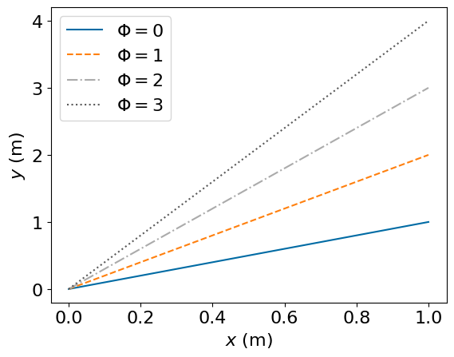
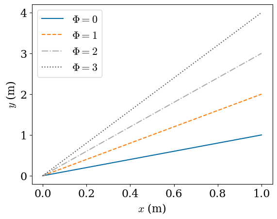
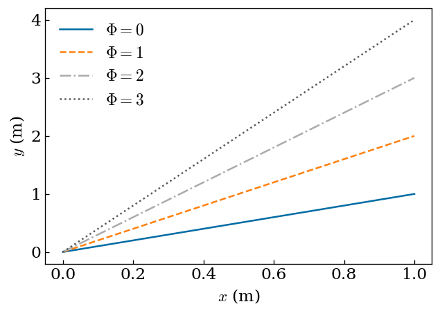
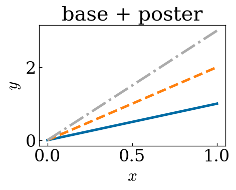
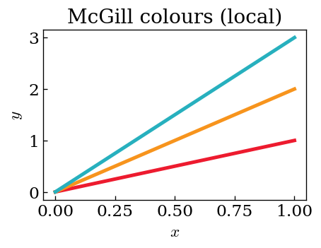
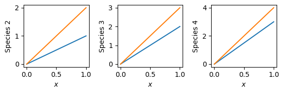
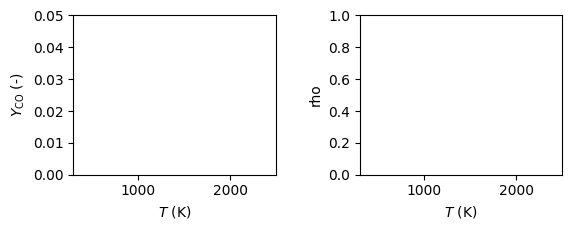
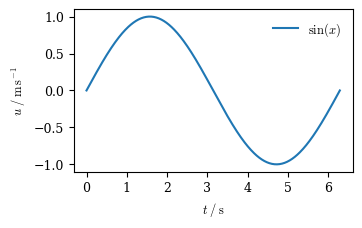
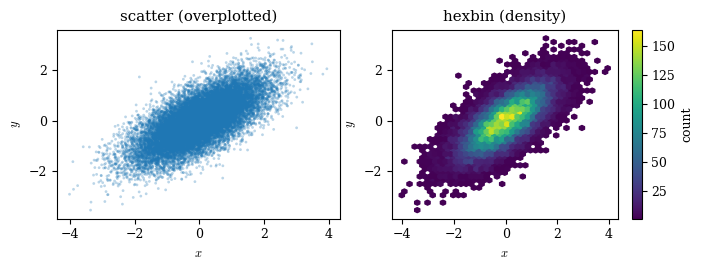
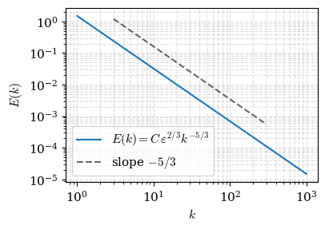

import matplotlib as mpl
import matplotlib.pyplot as plt
import numpy as np
tableau10blind = [
"#006BA4", "#FF800E", "#ABABAB", "#595959", "#5F9ED1",
"#C85200", "#898989", "#A2C8EC", "#FFBC79", "#CFCFCF",
]
linestyles = ["-", "--", "-.", ":", "-", "--", "-.", ":", "-", "--"]Efficient scientific plotting
Consistent styles, labels, and publication-quality figures
This tutorial covers best practices and example code for creating high-quality figures directly in Python. The guidelines are based on personal experience — think of them as a set of golden rules that have proven their worth over time. Following them from the start will save you a lot of reformatting work later.
TipWhy learn this?
A week-long simulation is judged, in the end, by its figures — they are how your result reaches a reader, and often the only part a reviewer studies closely. A little structure up front saves hours of reformatting later.
- Imagine you need to change the font in all 30 figures of a paper — with a stylesheet that’s one line, not 30 edits.
- Imagine you need to show where two million data points actually concentrate — a density plot does it honestly where a scatter just smears.
1 Guidelines for scientific figures
Before diving into code, it is worth establishing a few ground rules for what makes a good scientific figure. Getting these right from the start saves significant rework later.
- General plotting style
- Consistent style — colour scheme, axis labels, line widths, …
- Typeface and font size
- LaTeX rendering (optional, for a perfect match).
- Match the document by matching font size, figure size, and (optionally) typeface. The recommended figure and font sizes are usually in the journal’s author guidelines.
- If created this way, include the figure without scaling in LaTeX — use
scale=1instead of the commonwidth=\textwidth.
- Figure quality and resolution
.pdf— line plots and small plots (scalable vector graphics)..png/.jpeg— colour maps / contour plots (when PDF is impractical, and to avoid silent rescaling).- Sufficient resolution (~1000 dpi, or at least the journal guideline).
- Labels and units
- Consistent use; units set non-italic (upright).
- Typical formatting of a quantity \(T\) in kelvin:
- \(T\) / K — recommended by the SI guidelines
- \(T\) in K
- \(T\) (K)
- \(T\) [K]
- Data visualization
- Unambiguous data representation (e.g. scatter vs. hexbin — see below).
- A high level of self-explanation — readers often skim a paper looking only at the figures.
2 Defining a consistent plotting style
A key aspect of high-quality figures is a consistent design across all of them: font size, typeface, text rendering, colour scheme, axis design, and so on. Below we build up from the approach most beginners reach for to the one worth adopting — Matplotlib stylesheets.
Our target style: a colour-blind-friendly colour cycle (the tableau 10-blind palette) paired with a set of line styles (why colour-blind-friendly?).
2.1 Approach 1 — style inside each command (beginner)
The most intuitive approach: set every option directly in the plotting calls.
| Pros | Cons |
|---|---|
| Intuitive | Tedious — repeat it for every axis and figure |
| Simple to understand | Inefficient; clutters the code |
fig, ax = plt.subplots()
for i in range(4):
ax.plot([0, 1], [0, i + 1], color=tableau10blind[i],
linestyle=linestyles[i])
ax.set_xlabel("$x$ (m)", fontsize=16)
ax.set_ylabel("$y$ (m)", fontsize=16)
ax.tick_params(labelsize=16)
ax.legend([f"$\\Phi={i}$" for i in range(4)], fontsize=16)
plt.show()
2.2 Approach 2 — Matplotlib rcParams (intermediate)
rcParams let you set styles once; they then apply to every plot below the definition.
| Pros | Cons |
|---|---|
| Central definition, more efficient | Still lives in each script |
| No per-command repetition | Leads to code duplication across files |
plt.rcParams.update({
"font.size": 16,
"font.family": "serif",
"mathtext.fontset": "cm", # Computer-Modern math without a LaTeX install
"axes.prop_cycle": mpl.cycler(color=tableau10blind, linestyle=linestyles),
})
fig, ax = plt.subplots()
for i in range(4):
ax.plot([0, 1], [0, i + 1])
ax.set_xlabel("$x$ (m)")
ax.set_ylabel("$y$ (m)")
ax.legend([f"$\\Phi={i}$" for i in range(4)])
plt.show()
plt.rcdefaults() # reset for the next section
2.3 Approach 3 — Matplotlib stylesheets (recommended)
The gold standard is a stylesheet — a small .mplstyle file holding your defaults.
Pros: central definition, easy reuse across projects, highly flexible, and very clean code — with essentially no downside.
A stylesheet is a plain-text list of key : value settings. A good starting style (save it as mystyle.mplstyle):
figure.figsize : 6.0, 4.0 # inches
figure.dpi : 120 # on-screen scaling
savefig.dpi : 500 # dpi when saving raster output
xtick.direction : in
ytick.direction : in
legend.frameon : False
font.family : serif
mathtext.fontset : cm
font.size : 14
image.cmap : turbo
# colour-blind-friendly colour + line-style cycle
axes.prop_cycle : (cycler('color', ['006BA4','FF800E','ABABAB','595959','5F9ED1','C85200','898989','A2C8EC','FFBC79','CFCFCF']) + cycler('linestyle', ['-','--','-.',':','-','--','-.',':','-','--']))Apply it with plt.style.use('mystyle.mplstyle'). The three files used in this course — mystyle (base), mcgill-colors, and PROCI (journal, LaTeX) — are provided in the plotting-styles/ folder next to this notebook. Below we load the base style from a temporary file so the example is self-contained.
import tempfile, pathlib
MYSTYLE = '''
figure.figsize : 6.0, 4.0
figure.dpi : 120
savefig.dpi : 500
xtick.direction : in
ytick.direction : in
legend.frameon : False
font.family : serif
mathtext.fontset : cm
font.size : 14
image.cmap : turbo
axes.prop_cycle : (cycler('color', ['006BA4','FF800E','ABABAB','595959','5F9ED1','C85200','898989','A2C8EC','FFBC79','CFCFCF']) + cycler('linestyle', ['-','--','-.',':','-','--','-.',':','-','--']))
'''
style_dir = pathlib.Path(tempfile.mkdtemp())
(style_dir / "mystyle.mplstyle").write_text(MYSTYLE)
plt.rcdefaults()
plt.style.use(str(style_dir / "mystyle.mplstyle"))
fig, ax = plt.subplots()
for i in range(4):
ax.plot([0, 1], [0, i + 1])
ax.set_xlabel("$x$ (m)")
ax.set_ylabel("$y$ (m)")
ax.legend([f"$\\Phi={i}$" for i in range(4)])
plt.show()
2.3.1 Make styles globally available
Place your .mplstyle files in Matplotlib’s config directory and they become available in every script — no path needed, just plt.style.use('mystyle').
print("put your styles here:", mpl.get_configdir() + "/stylelib")
print("some built-in styles:", plt.style.available[:8])put your styles here: /root/.config/matplotlib/stylelib
some built-in styles: ['Solarize_Light2', '_classic_test_patch', '_mpl-gallery', '_mpl-gallery-nogrid', 'bmh', 'classic', 'dark_background', 'fast']2.3.2 Combine styles, and apply one locally
Styles compose: a base style plus a journal/medium-specific one (font and figure size for a paper vs. a poster). You can also apply a style to a single figure with a with context, leaving everything else untouched.
POSTER = 'font.size: 20\nlines.linewidth: 3\n'
MCGILL = ("axes.prop_cycle: cycler('color', "
"['ED1B2F','F7941D','27B0BE','305534','024F6D','B2D235'])\n")
(style_dir / "poster.mplstyle").write_text(POSTER)
(style_dir / "mcgill.mplstyle").write_text(MCGILL)
def demo(ax):
for i in range(3):
ax.plot([0, 1], [0, i + 1])
ax.set_xlabel("$x$"); ax.set_ylabel("$y$")
# base + poster overrides, combined in a list (later wins)
plt.rcdefaults()
plt.style.use([str(style_dir / "mystyle.mplstyle"),
str(style_dir / "poster.mplstyle")])
fig, ax = plt.subplots(figsize=(4, 2.6)); demo(ax)
ax.set_title("base + poster"); plt.show()
# McGill colours for THIS figure only
with plt.style.context([str(style_dir / "mystyle.mplstyle"),
str(style_dir / "mcgill.mplstyle")]):
fig, ax = plt.subplots(figsize=(4, 2.6)); demo(ax)
ax.set_title("McGill colours (local)"); plt.show()
plt.rcdefaults()

2.3.3 Make it fail-safe
If a style might not be installed on every machine, guard it so your script still runs:
try:
plt.style.use(['mystyle', 'PROCI'])
except OSError:
print("Matplotlib styles not found — using defaults")2.3.4 For a journal: true LaTeX rendering
For a perfect typeface match, a journal style enables LaTeX typesetting. This needs a working LaTeX toolchain (and the right fonts/packages), so the PROCI.mplstyle below is shown for reference and not executed here:
font.family : serif
font.serif : Times New Roman
text.usetex : true
font.size : 7
text.latex.preamble : \usepackage{amsmath}\usepackage{times}
lines.linewidth : 1.0
savefig.bbox : tightImagine you need to relabel the temperature axis across 15 figures from T (K) to T / K. Hand-typing LaTeX 15 times invites typos — a label dictionary keeps one source of truth. This is super easy in Python using a dict with .get() fallbacks.
3 Labels and limits
Consistent axis labels and limits are a hallmark of high-quality figures. A clean, dictionary-based approach makes defining and reusing them across figures reliable.
3.1 Always work with an explicit axis
Create the figure and axis explicitly and pass the axis into your plotting helpers, rather than relying on Matplotlib’s implicit current axis. Instead of plt.plot(...), use fig, ax = plt.subplots() then ax.plot(...). This makes helper functions reusable and trivially extensible to multi-panel figures.
def lineplot(ax, i):
ax.plot([0, 1], [0, i])
ax.set_xlabel("$x$")
ax.set_ylabel(f"Species {i}")
return ax
fig, axs = plt.subplots(ncols=3, figsize=(6, 2))
for i, ax in enumerate(axs):
lineplot(ax, i + 1)
lineplot(ax, i + 2)
fig.tight_layout()
plt.show()
3.2 Dictionaries for labels and limits
Map each variable name (as used to access your data, e.g. a column of a DataFrame) to its label string and axis limits. The dictionary .get method gives a fail-safe default when a key is missing.
var_label = {
"T": "$T$ (K)",
"CO": "$Y_{\\mathrm{CO}}$ (-)",
"OH": "$Y_{\\mathrm{OH}}$ (-)",
}
lims = {
"T": (300, 2500),
"CO": (0, 0.05),
"OH": (0, 0.007),
}
print("found :", var_label.get("T", "T"))
print("fallback :", var_label.get("CO2", "CO2")) # key missing -> namefound : $T$ (K)
fallback : CO23.3 Generate labels in a chosen unit style
Store each quantity as its LaTeX symbol and unit, then assemble the label in whichever convention you want — matching the four styles from the guidelines above (T / K, T in K, T (K), T [K]).
latex_label_unit = {
"t": {"latex_string": "$t$", "unit": "s"},
"z": {"latex_string": "$z$", "unit": "m"},
"T": {"latex_string": "$T$", "unit": "K"},
}
def define_label_dict(d, style=0):
"""style: 0 -> 'q / u', 1 -> 'q in u', 2 -> 'q (u)', 3 -> 'q [u]'."""
sep = {0: " / {}", 1: " in {}", 2: " ({})", 3: " [{}]"}[style]
return {k: v["latex_string"] + sep.format(v["unit"])
for k, v in d.items()}
for s in range(4):
print(s, define_label_dict(latex_label_unit, style=s))0 {'t': '$t$ / s', 'z': '$z$ / m', 'T': '$T$ / K'}
1 {'t': '$t$ in s', 'z': '$z$ in m', 'T': '$T$ in K'}
2 {'t': '$t$ (s)', 'z': '$z$ (m)', 'T': '$T$ (K)'}
3 {'t': '$t$ [s]', 'z': '$z$ [m]', 'T': '$T$ [K]'}3.4 Helpers to set labels and limits on any axis
Small, reusable functions that look everything up from the dictionaries — with graceful fallbacks.
def set_labels(ax, xv, yv, label_dict):
ax.set_xlabel(label_dict.get(xv, xv))
ax.set_ylabel(label_dict.get(yv, yv))
def set_limits(ax, xv, yv, lims):
if lims.get(xv):
ax.set_xlim(lims[xv])
if lims.get(yv):
ax.set_ylim(lims[yv])
def set_label_and_limits(ax, xv, yv, label_dict={}, lims={}):
set_labels(ax, xv, yv, label_dict)
set_limits(ax, xv, yv, lims)
fig, axs = plt.subplots(ncols=2, figsize=(6, 2.4))
for yv, ax in zip(["CO", "rho"], axs): # 'rho' is missing on purpose
set_label_and_limits(ax, "T", yv, label_dict=var_label, lims=lims)
fig.tight_layout()
plt.show()
print("note: 'rho' had no dictionary entry, so its axis label is just the name")
note: 'rho' had no dictionary entry, so its axis label is just the name4 Figure size and file format
Draw the figure at the width it will occupy (one column ≈ 3.5 in) and place it in LaTeX with scale=1. Save line plots as .pdf (vector, sharp at any zoom) and colour maps / contour plots as .png at high dpi (a vector version would be huge).
GOLDEN = (1 + 5 ** 0.5) / 2
x = np.linspace(0, 2 * np.pi, 400)
plt.rcdefaults()
plt.rcParams.update({"font.family": "serif", "mathtext.fontset": "cm",
"font.size": 9})
fig, ax = plt.subplots(figsize=(3.5, 3.5 / GOLDEN))
ax.plot(x, np.sin(x), label=r"$\sin(x)$")
ax.set_xlabel(r"$t \; / \; \mathrm{s}$")
ax.set_ylabel(r"$u \; / \; \mathrm{m\,s^{-1}}$")
ax.legend(frameon=False)
fig.tight_layout(pad=0.3)
fig.savefig("lineplot.pdf") # vector, for a line plot
plt.show()
Imagine you need to plot a \(u'\)–\(v'\) cloud of two million points. A scatter plot turns into a solid black blob; you need to show density. This is super easy in Python using hexbin.
5 Unambiguous data: scatter vs. hexbin
A scatter plot of many points overplots — dense regions saturate and hide the true distribution. For large samples a 2-D density (hexbin) is honest and readable.
rng = np.random.default_rng(0)
n = 20_000
xd = rng.normal(0, 1, n)
yd = xd * 0.6 + rng.normal(0, 0.6, n)
fig, (a1, a2) = plt.subplots(1, 2, figsize=(7, 2.6))
a1.scatter(xd, yd, s=4, alpha=0.3, edgecolors="none")
a1.set_title("scatter (overplotted)")
hb = a2.hexbin(xd, yd, gridsize=40, cmap="viridis", mincnt=1)
a2.set_title("hexbin (density)")
fig.colorbar(hb, ax=a2, label="count")
for a in (a1, a2):
a.set_xlabel(r"$x$"); a.set_ylabel(r"$y$")
fig.tight_layout(pad=0.4)
plt.show()
6 Self-tests
1. Stylesheet. Write a two-line style string that sets font.size to 12 and puts the ticks inside the axes, save it to a temp file, apply it, and make any quick plot.
Show solution
import tempfile, pathlib
s = 'font.size: 12\nxtick.direction: in\nytick.direction: in\n'
p = pathlib.Path(tempfile.mkdtemp()) / "t.mplstyle"
p.write_text(s)
plt.rcdefaults(); plt.style.use(str(p))
fig, ax = plt.subplots(figsize=(3, 2)); ax.plot([0, 1], [0, 1]); plt.show()
plt.rcdefaults()2. Label dictionary. Using var_label above, write a helper ylabel(ax, key) that sets the y-label from the dictionary, falling back to the key if it is missing. Test it with "OH" and "foo".
Show solution
def ylabel(ax, key):
ax.set_ylabel(var_label.get(key, key))
fig, ax = plt.subplots(figsize=(3, 2))
ylabel(ax, "OH"); print("OH ->", ax.get_ylabel())
ylabel(ax, "foo"); print("foo ->", ax.get_ylabel())
plt.close(fig)3. Format choice. You made (a) a convergence-history line plot and (b) a filled temperature contour. Which file format for each?
TipSolution
.pdf— a few vector paths, sharp at any zoom, tiny file. (b).pngat ~1000 dpi — a filled contour is effectively an image; a vector version would contain a huge number of polygons, so a high-dpi raster is smaller and reliable.
7 Turbulence in practice: the energy spectrum
The canonical turbulence figure is the Kolmogorov inertial-range spectrum \(E(k)=C\,\varepsilon^{2/3}k^{-5/3}\) on log–log axes, where a power law becomes a straight line — exactly the kind of plot the style above is built for.
def energy_spectrum(k, C=1.5, eps=1.0):
return C * eps ** (2 / 3) * k ** (-5 / 3)
k = np.logspace(0, 3, 200)
plt.rcdefaults()
plt.rcParams.update({'font.family': 'serif', 'mathtext.fontset': 'cm',
'font.size': 11})
fig, ax = plt.subplots(figsize=(4.2, 3.0))
ax.loglog(k, energy_spectrum(k), label=r'$E(k)=C\,\varepsilon^{2/3}k^{-5/3}$')
ax.loglog([3, 300], 5 * energy_spectrum(np.array([3.0, 300.0])), '--',
color='0.4', label=r'slope $-5/3$')
ax.set_xlabel(r'$k$'); ax.set_ylabel(r'$E(k)$')
ax.grid(True, which='both', ls='--', alpha=0.4); ax.legend()
fig.tight_layout(); plt.show()
Self-test. Overlay a second spectrum with ten times the dissipation (\(\varepsilon = 10\)) and label both. Which lies higher, and why?
Show solution
fig, ax = plt.subplots(figsize=(4.2, 3.0))
for eps in (1.0, 10.0):
ax.loglog(k, energy_spectrum(k, eps=eps), label=fr'$\varepsilon={eps:g}$')
ax.set_xlabel(r'$k$'); ax.set_ylabel(r'$E(k)$')
ax.grid(True, which='both', ls='--', alpha=0.4); ax.legend()
fig.tight_layout(); plt.show()
# E ~ eps^(2/3): more dissipation lifts the whole curve, so eps=10 sits above.